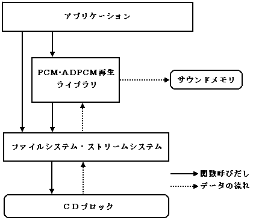
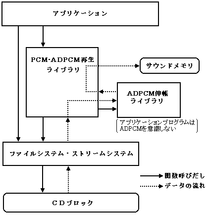

★
PROGRAMMER'S GUIDE
★
PCM・ADPCM再生ライブラリ
■ ｜
進む
▼
PCM・ADPCM再生ライブラリ
1.概 要
1.1 目的
PCM・ADPCM再生ライブラリは、SEGASATURN 上で簡単にPCM再生をするためのライブラリです。
1.2 特徴
PCM再生が簡単にできます
ユーザは、定期的にPCMタスク関数をコールします。
ライブラリは、CDからの読み込み、リングバッファ管理、時間管理、PCMバッファへのデータ供給、サウンドドライバへのコマンド発行を行います。
ADPCM対応
ADPCM圧縮されたデータを伸張しながら再生できます。
ADPCMは CD-ROM XA Audio のデータ形式として規定された方式で、約4分1の圧縮率で優れた音質を実現できます。
四種類のファイルフォーマットに対応
AIFF形式(PCM非圧縮)
CD-ROM XA Audio 形式(ADPCM圧縮)
指定ADPCM形式（CRC総合研究所AudioStack出力形式）
SaturnPCM 形式（PCM非圧縮）
ポーズ機能
ハードウェアにはPCM再生のポーズ機能がありませんが、本ライブラリを使用すれば簡単にポーズすることができます。
マルチ再生
同時に4本のPCMを再生することができます。
BGMを再生し、さらに3人のセリフを非同期的に重ねて発音させるなどの応用ができます。
(ADPCM圧縮データを2本以上含むことはできません)
1.3 システムイメージ
本ライブラリのシステムイメージを次の図に示します。
図1.1 システムイメージ(PCM非圧縮データの再生)

図1.2 システムイメージ(ADPCM圧縮データの再生)

■ ｜
進む
▼
★
PROGRAMMER'S GUIDE
★
PCM・ADPCM再生ライブラリ
Copyright SEGA ENTERPRISES, LTD., 1997
 ★PROGRAMMER'S GUIDE
★PCM・ADPCM再生ライブラリ
★PROGRAMMER'S GUIDE
★PCM・ADPCM再生ライブラリ
★PROGRAMMER'S GUIDE
★PCM・ADPCM再生ライブラリ
★PROGRAMMER'S GUIDE
★PCM・ADPCM再生ライブラリ